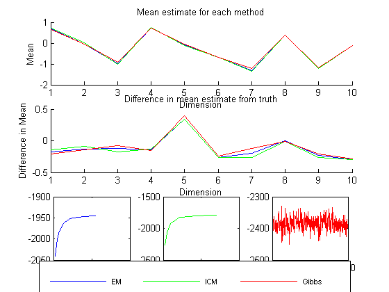

Compare the results of imputation on a MVN using three imputation methods: EM, ICM, and Gibbs
PMTKauthor Cody Severinski
% This file is from pmtk3.googlecode.com setSeed(1); d = 10; n = 100; mu = randn(d,1); Sigma = randpd(d); pcMissing = 0.2; model = struct('mu', mu, 'Sigma', Sigma); Xfull = gaussSample(model, n); missing = rand(n,d) < pcMissing; Xmiss = Xfull; Xmiss(missing) = NaN; Xhid = Xfull; Xhid(~missing) = NaN; verb = true; % first EM fprintf('EM First\n') [model, LLtrace{1}] = gaussMissingFitEm(Xmiss, 'verbose', verb, 'maxIter', 500); muHat{1} = model.mu; SigmaHat{1} = model.Sigma; % second ICM fprintf('Now ICM\n') [model, LLtrace{2}] = gaussMissingFitICM(Xmiss, 'verbose', verb); muHat{2} = model.mu; SigmaHat{2} = model.Sigma; % third Gibbs fprintf('Now Gibbs\n') [model, dataSamples, LLtrace{3}] = gaussMissingFitGibbs(Xmiss, 'mu0', nanmeanPMTK(Xmiss), 'Lambda0', diag(nanvarPMTK(Xmiss)), 'k0', 0.01, 'dof', d + 2, 'verbose', verb); muSamples = model.mu; SigmaSamples = model.Sigma; muHat{3} = mean(muSamples); SigmaHat{3} = mean(SigmaSamples,3); method = {'EM', 'ICM', 'Gibbs'}; % Print out some information fprintf('True mean:\t\t %s\n', mat2str(rowvec(mu),2)) for m=1:length(method) fprintf('Mean for method %s:\t %s\n', method{m}, mat2str(rowvec(muHat{m}),2)) % fprintf('Variance for method %s: %s\n', method{m}, mat2str(SigmaHat{m})) end plotOpts = {'b','g','r'}; % Plot the estimated means figure(); subplot(3,3,1:3); hold on; for m=1:length(method) plot(1:d, rowvec(muHat{m}), plotOpts{m}) end xlabel('Dimension'); ylabel('Mean'); %legend(method, 'Location', 'Best'); title('Mean estimate for each method'); % Plot the difference in the means subplot(3,3,4:6); hold on; for m=1:length(method) plot(1:d, rowvec(muHat{m}) - rowvec(mu), plotOpts{m}); end xlabel('Dimension'); ylabel('Difference in Mean'); title('Difference in mean estimate from truth'); % Plot the trace of log likelihood over iterations for all methods a = zeros(3,4); for m=1:length(method) subplot(3,3,6+m); h{m} = plot(LLtrace{m}, plotOpts{m}); a(m,:) = axis; set(gca,'XTickLabel',num2str(get(gca,'XTick').')); set(gca,'YTickLabel',num2str(get(gca,'YTick').')) end % Adjust the axis -- does not improve visualization %ymin = min(a(:,3)); ymax = max(a(:,4)); %a(:,3) = ymin; a(:,4) = ymax; %for m=1:length(method) % subplot(3,3,6+m); % axis(a(m,:)); %end %suplabel('Iteration', 'x', [.075 .1 .85 .85]); suplabel('Log likelihood', 'y', [.1 .075 .85 .85/3]); %title('Log-likelihood trace over iterations'); % Place one overall legend subplot(3,3,[1:3]); L = legend(method); set(L, 'position', [0.1, 0.02, 0.8, 0.03]); set(L, 'fontsize', 8); set(L, 'orientation', 'horizontal');
EM First initializing model for EM 1 loglik: -1853.82 2 loglik: -1813.5 3 loglik: -1795.16 4 loglik: -1784.6 5 loglik: -1777.89 6 loglik: -1773.32 7 loglik: -1770.08 8 loglik: -1767.7 9 loglik: -1765.92 10 loglik: -1764.54 11 loglik: -1763.45 12 loglik: -1762.58 13 loglik: -1761.87 14 loglik: -1761.28 15 loglik: -1760.79 16 loglik: -1760.37 17 loglik: -1760.01 18 loglik: -1759.7 19 loglik: -1759.43 20 loglik: -1759.2 21 loglik: -1758.99 22 loglik: -1758.8 23 loglik: -1758.64 Now ICM 1: LL = -2265.939 2: LL = -2070.704 3: LL = -1975.069 4: LL = -1928.008 5: LL = -1903.059 6: LL = -1880.911 7: LL = -1856.220 8: LL = -1837.670 9: LL = -1829.118 10: LL = -1824.069 11: LL = -1819.984 12: LL = -1816.417 13: LL = -1813.246 14: LL = -1810.407 15: LL = -1807.860 16: LL = -1805.572 17: LL = -1803.516 18: LL = -1801.669 19: LL = -1800.008 20: LL = -1798.516 21: LL = -1797.175 22: LL = -1795.970 23: LL = -1794.885 24: LL = -1793.909 25: LL = -1793.029 26: LL = -1792.235 27: LL = -1791.518 28: LL = -1790.869 Now Gibbs 1: LL = -2372.971 2: LL = -2404.359 3: LL = -2371.108 4: LL = -2384.517 5: LL = -2375.570 6: LL = -2367.373 7: LL = -2380.032 8: LL = -2366.501 9: LL = -2384.120 10: LL = -2386.995 11: LL = -2371.880 12: LL = -2386.716 13: LL = -2374.761 14: LL = -2364.603 15: LL = -2369.252 16: LL = -2370.547 17: LL = -2376.160 18: LL = -2365.481 19: LL = -2378.861 20: LL = -2387.169 21: LL = -2373.799 22: LL = -2369.197 23: LL = -2370.146 24: LL = -2396.426 25: LL = -2396.096 26: LL = -2400.008 27: LL = -2399.812 28: LL = -2405.943 29: LL = -2391.283 30: LL = -2396.421 31: LL = -2377.790 32: LL = -2371.137 33: LL = -2370.817 34: LL = -2371.316 35: LL = -2377.400 36: LL = -2385.903 37: LL = -2359.797 38: LL = -2353.410 39: LL = -2370.726 40: LL = -2383.533 41: LL = -2388.270 42: LL = -2374.583 43: LL = -2382.998 44: LL = -2400.971 45: LL = -2396.599 46: LL = -2407.901 47: LL = -2398.964 48: LL = -2381.650 49: LL = -2393.754 50: LL = -2387.362 51: LL = -2381.687 52: LL = -2370.723 53: LL = -2389.964 54: LL = -2407.520 55: LL = -2371.860 56: LL = -2361.260 57: LL = -2415.237 58: LL = -2404.384 59: LL = -2384.267 60: LL = -2379.779 61: LL = -2370.838 62: LL = -2398.273 63: LL = -2364.542 64: LL = -2380.138 65: LL = -2370.606 66: LL = -2379.007 67: LL = -2380.714 68: LL = -2374.005 69: LL = -2394.881 70: LL = -2364.360 71: LL = -2395.520 72: LL = -2370.899 73: LL = -2393.545 74: LL = -2396.190 75: LL = -2380.944 76: LL = -2404.521 77: LL = -2384.048 78: LL = -2404.390 79: LL = -2415.409 80: LL = -2393.805 81: LL = -2389.087 82: LL = -2378.679 83: LL = -2395.138 84: LL = -2377.154 85: LL = -2381.962 86: LL = -2364.517 87: LL = -2359.118 88: LL = -2378.819 89: LL = -2386.150 90: LL = -2354.735 91: LL = -2413.095 92: LL = -2442.238 93: LL = -2344.882 94: LL = -2368.728 95: LL = -2368.519 96: LL = -2343.821 97: LL = -2351.424 98: LL = -2366.201 99: LL = -2358.763 100: LL = -2357.229 101: LL = -2370.790 102: LL = -2395.868 103: LL = -2377.804 104: LL = -2396.671 105: LL = -2389.069 106: LL = -2420.352 107: LL = -2398.673 108: LL = -2385.515 109: LL = -2405.010 110: LL = -2393.493 111: LL = -2379.312 112: LL = -2373.140 113: LL = -2401.970 114: LL = -2394.500 115: LL = -2365.046 116: LL = -2368.699 117: LL = -2382.176 118: LL = -2360.437 119: LL = -2367.027 120: LL = -2359.916 121: LL = -2404.225 122: LL = -2398.503 123: LL = -2405.702 124: LL = -2379.823 125: LL = -2375.837 126: LL = -2376.811 127: LL = -2361.009 128: LL = -2385.847 129: LL = -2365.067 130: LL = -2356.436 131: LL = -2353.878 132: LL = -2369.376 133: LL = -2399.089 134: LL = -2397.946 135: LL = -2415.916 136: LL = -2401.820 137: LL = -2388.342 138: LL = -2371.162 139: LL = -2361.475 140: LL = -2357.014 141: LL = -2379.216 142: LL = -2396.396 143: LL = -2369.697 144: LL = -2365.825 145: LL = -2380.166 146: LL = -2376.543 147: LL = -2372.219 148: LL = -2383.727 149: LL = -2409.799 150: LL = -2399.123 151: LL = -2369.825 152: LL = -2386.875 153: LL = -2400.875 154: LL = -2410.299 155: LL = -2403.569 156: LL = -2396.943 157: LL = -2430.891 158: LL = -2400.956 159: LL = -2361.231 160: LL = -2366.461 161: LL = -2354.693 162: LL = -2367.266 163: LL = -2384.348 164: LL = -2389.650 165: LL = -2375.313 166: LL = -2390.473 167: LL = -2384.304 168: LL = -2379.564 169: LL = -2378.495 170: LL = -2398.126 171: LL = -2402.920 172: LL = -2413.449 173: LL = -2399.107 174: LL = -2396.548 175: LL = -2383.002 176: LL = -2389.655 177: LL = -2377.883 178: LL = -2397.826 179: LL = -2395.846 180: LL = -2380.894 181: LL = -2393.776 182: LL = -2361.706 183: LL = -2359.672 184: LL = -2368.916 185: LL = -2397.593 186: LL = -2415.794 187: LL = -2361.036 188: LL = -2380.395 189: LL = -2383.313 190: LL = -2360.616 191: LL = -2393.114 192: LL = -2383.527 193: LL = -2370.891 194: LL = -2359.172 195: LL = -2356.553 196: LL = -2360.092 197: LL = -2390.434 198: LL = -2395.818 199: LL = -2415.258 200: LL = -2366.504 201: LL = -2346.496 202: LL = -2359.984 203: LL = -2360.891 204: LL = -2369.070 205: LL = -2355.869 206: LL = -2359.148 207: LL = -2407.662 208: LL = -2394.226 209: LL = -2374.091 210: LL = -2353.346 211: LL = -2350.547 212: LL = -2370.067 213: LL = -2362.374 214: LL = -2382.539 215: LL = -2388.370 216: LL = -2397.357 217: LL = -2384.865 218: LL = -2407.746 219: LL = -2383.488 220: LL = -2410.740 221: LL = -2407.124 222: LL = -2406.266 223: LL = -2382.039 224: LL = -2386.347 225: LL = -2371.334 226: LL = -2369.530 227: LL = -2371.624 228: LL = -2370.323 229: LL = -2389.996 230: LL = -2397.720 231: LL = -2380.254 232: LL = -2386.851 233: LL = -2357.400 234: LL = -2380.309 235: LL = -2395.607 236: LL = -2426.223 237: LL = -2391.130 238: LL = -2398.692 239: LL = -2369.872 240: LL = -2425.009 241: LL = -2392.226 242: LL = -2398.654 243: LL = -2398.753 244: LL = -2378.630 245: LL = -2365.094 246: LL = -2377.228 247: LL = -2392.961 248: LL = -2402.409 249: LL = -2391.127 250: LL = -2377.038 251: LL = -2378.778 252: LL = -2376.896 253: LL = -2405.409 254: LL = -2425.223 255: LL = -2415.622 256: LL = -2408.713 257: LL = -2415.278 258: LL = -2383.763 259: LL = -2387.267 260: LL = -2376.106 261: LL = -2378.268 262: LL = -2398.456 263: LL = -2375.017 264: LL = -2402.489 265: LL = -2377.166 266: LL = -2369.710 267: LL = -2381.111 268: LL = -2387.312 269: LL = -2406.973 270: LL = -2402.129 271: LL = -2410.904 272: LL = -2380.078 273: LL = -2370.543 274: LL = -2372.646 275: LL = -2386.034 276: LL = -2369.201 277: LL = -2406.996 278: LL = -2402.226 279: LL = -2408.211 280: LL = -2376.214 281: LL = -2369.992 282: LL = -2376.983 283: LL = -2368.354 284: LL = -2361.516 285: LL = -2366.040 286: LL = -2385.419 287: LL = -2391.141 288: LL = -2394.736 289: LL = -2359.340 290: LL = -2365.724 291: LL = -2396.436 292: LL = -2376.064 293: LL = -2378.101 294: LL = -2362.066 295: LL = -2368.296 296: LL = -2388.978 297: LL = -2384.720 298: LL = -2363.382 299: LL = -2387.882 300: LL = -2354.111 301: LL = -2371.243 302: LL = -2386.825 303: LL = -2364.477 304: LL = -2360.777 305: LL = -2357.911 306: LL = -2388.348 307: LL = -2345.621 308: LL = -2369.578 309: LL = -2363.703 310: LL = -2381.471 311: LL = -2362.087 312: LL = -2395.282 313: LL = -2376.206 314: LL = -2398.964 315: LL = -2379.775 316: LL = -2383.414 317: LL = -2368.522 318: LL = -2388.513 319: LL = -2400.622 320: LL = -2385.541 321: LL = -2367.866 322: LL = -2355.946 323: LL = -2376.998 324: LL = -2379.535 325: LL = -2386.711 326: LL = -2365.506 327: LL = -2357.839 328: LL = -2359.239 329: LL = -2379.731 330: LL = -2400.664 331: LL = -2381.841 332: LL = -2375.854 333: LL = -2400.983 334: LL = -2361.790 335: LL = -2373.307 336: LL = -2348.920 337: LL = -2357.345 338: LL = -2380.911 339: LL = -2384.726 340: LL = -2379.806 341: LL = -2393.842 342: LL = -2405.571 343: LL = -2388.218 344: LL = -2390.392 345: LL = -2386.944 346: LL = -2371.345 347: LL = -2405.925 348: LL = -2438.109 349: LL = -2353.209 350: LL = -2376.979 351: LL = -2380.231 352: LL = -2410.609 353: LL = -2419.009 354: LL = -2380.283 355: LL = -2377.376 356: LL = -2382.762 357: LL = -2379.882 358: LL = -2363.861 359: LL = -2383.794 360: LL = -2397.765 361: LL = -2359.405 362: LL = -2370.759 363: LL = -2383.983 364: LL = -2395.430 365: LL = -2413.767 366: LL = -2379.506 367: LL = -2412.207 368: LL = -2385.103 369: LL = -2405.262 370: LL = -2357.808 371: LL = -2356.482 372: LL = -2352.341 373: LL = -2352.882 374: LL = -2380.637 375: LL = -2375.928 376: LL = -2414.644 377: LL = -2382.095 378: LL = -2362.620 379: LL = -2349.163 380: LL = -2372.315 381: LL = -2370.221 382: LL = -2379.211 383: LL = -2384.659 384: LL = -2387.479 385: LL = -2417.365 386: LL = -2394.368 387: LL = -2438.022 388: LL = -2429.482 389: LL = -2407.778 390: LL = -2418.416 391: LL = -2401.889 392: LL = -2388.083 393: LL = -2401.152 394: LL = -2374.182 395: LL = -2382.601 396: LL = -2376.290 397: LL = -2385.601 398: LL = -2365.331 399: LL = -2374.934 400: LL = -2399.820 401: LL = -2418.690 402: LL = -2398.789 403: LL = -2384.607 404: LL = -2386.565 405: LL = -2380.560 406: LL = -2397.349 407: LL = -2384.521 408: LL = -2379.767 409: LL = -2400.499 410: LL = -2403.585 411: LL = -2414.210 412: LL = -2406.479 413: LL = -2416.182 414: LL = -2398.107 415: LL = -2382.101 416: LL = -2400.244 417: LL = -2383.804 418: LL = -2420.064 419: LL = -2415.562 420: LL = -2424.324 421: LL = -2403.146 422: LL = -2380.323 423: LL = -2357.342 424: LL = -2374.058 425: LL = -2384.313 426: LL = -2392.181 427: LL = -2361.443 428: LL = -2384.330 429: LL = -2401.017 430: LL = -2382.902 431: LL = -2372.990 432: LL = -2371.262 433: LL = -2366.972 434: LL = -2379.577 435: LL = -2361.748 436: LL = -2378.779 437: LL = -2392.747 438: LL = -2388.301 439: LL = -2380.120 440: LL = -2370.674 441: LL = -2373.068 442: LL = -2392.297 443: LL = -2379.155 444: LL = -2349.286 445: LL = -2391.941 446: LL = -2399.042 447: LL = -2384.880 448: LL = -2377.759 449: LL = -2376.477 450: LL = -2400.036 451: LL = -2384.857 452: LL = -2394.881 453: LL = -2396.179 454: LL = -2398.731 455: LL = -2375.012 456: LL = -2394.470 457: LL = -2378.278 458: LL = -2394.942 459: LL = -2354.412 460: LL = -2367.875 461: LL = -2377.172 462: LL = -2376.199 463: LL = -2366.286 464: LL = -2358.500 465: LL = -2380.951 466: LL = -2356.500 467: LL = -2384.580 468: LL = -2397.698 469: LL = -2413.379 470: LL = -2375.620 471: LL = -2398.974 472: LL = -2416.655 473: LL = -2421.338 474: LL = -2400.963 475: LL = -2407.012 476: LL = -2440.419 477: LL = -2413.713 478: LL = -2397.452 479: LL = -2378.747 480: LL = -2371.489 481: LL = -2340.438 482: LL = -2345.003 483: LL = -2338.858 484: LL = -2339.861 485: LL = -2355.610 486: LL = -2387.775 487: LL = -2387.534 488: LL = -2366.908 489: LL = -2377.632 490: LL = -2387.502 491: LL = -2381.090 492: LL = -2413.760 493: LL = -2431.292 494: LL = -2387.495 495: LL = -2390.741 496: LL = -2394.574 497: LL = -2369.506 498: LL = -2384.226 499: LL = -2380.665 500: LL = -2382.245 True mean: [0.86 0.094 -0.85 0.87 -0.44 -0.43 -1.1 0.4 -0.96 0.17] Mean for method EM: [0.69 -0.035 -0.97 0.73 -0.098 -0.69 -1.3 0.39 -1.2 -0.13] Mean for method ICM: [0.72 0.0069 -1 0.74 -0.1 -0.69 -1.4 0.39 -1.2 -0.12] Mean for method Gibbs: [0.67 -0.095 -0.97 0.73 -0.039 -0.68 -1.3 0.4 -1.2 -0.16]